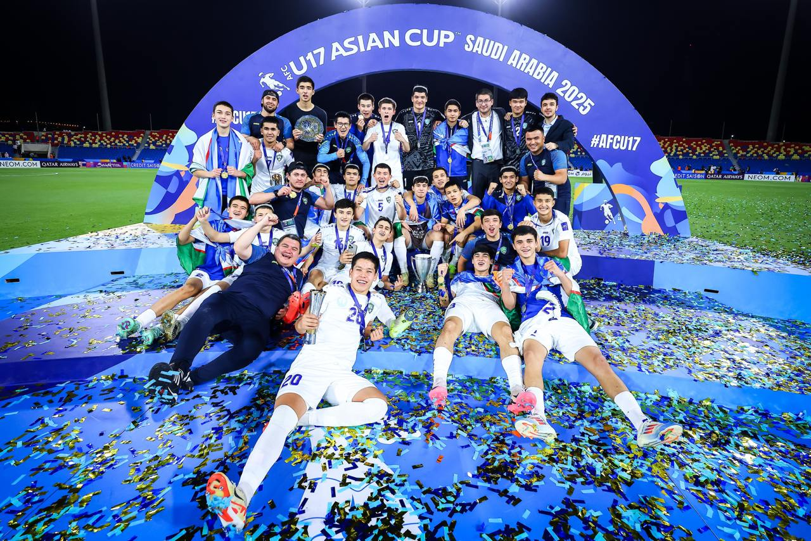

Shavkat Mirziyoyev Saudiya Arabistonida o‘tkazilgan o‘smirlar o‘rtasidagi Osiyo kubogida g‘alaba qozongan O‘zbekiston U-17 terma jamoasini unvon va medallar bilan taqdirladi. Shuningdek, o‘yinni Sport telekanalida sharhlagan sharhlovchilar «Shuhrat» medali bilan mukofotlandi. Farmon matni prezident matbuot xizmati tomonidan e’lon qilindi.
